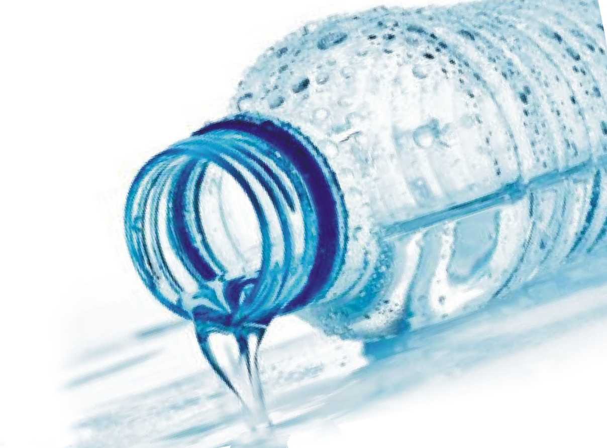

Как проверить качество бутилированной воды
Как проверить качество бутилированной воды
Рано или поздно в жизни каждого наступает момент когда необходимо выбрать нечто лучшее чем вода из крана, а порой и намного лучшее, ведь водопроводная вода с каждым днем становится далеко не лучшей.

Некоторые люди изначально переходят на употребление воды из колонки, но это тоже не является качественным и безопасным вариантом. Поэтому если вы твердо решили заказать бутилированную воду стоит заранее узнать какими показатели минерализации должна обладать вода и вцелом узнать как проверить качество бутилированной воды от производителя.Как определить качество бутилированной воды и воды из под крана самостоятельно
Существует несколько доступных каждому, методов для проверки качества воды в 20ти литровых бутылях или воды из под крана. Эти способы вы можете выполнить находясь дома или на работе.1. Капля кристальной водыНа прозрачное чистое стекло (или зеркальце) нанести несколько капель воды и оставить до полного высыхания. В случае если после капли не останется разводов или побелевшего пятнышка, это будет означать что вода чиста и не содержит в себе высокий концентрат солей или хлора.Тем не менее такой способ, не доказывает абсолютную безопасность для употребления воды.2. Отстаивание водыНеобходимо в трехлитровую чистую банку налить проверяемую воду. Накрыть крышкой и оставить отстаиваться, в темное место, на несколько дней. По истечению 3-4 дней банку с водой достают и смотрят на содержимое. Если вода абсолютно чиста, прозрачна, не имеет запаха и вкуса это значит что вода чистая и не содержит бактерий или вредных химических соединений. В случае если вода в банке позеленела или стала хотя бы немного мутноватого цвета, это признак зарождения живых соединений водорослей и бактерий. Такая вода опасна и может нанести непоправимый ущерб при употреблении. Так же на поверхности воды может образовываться масляная пленка. Это первый и верный признак наличия в воде химических соединений которые пагубно влияют на организм!3. Простое кипячениеНалейте воду в кастрюлю или любую другую посудину для кипячения (но не белого цвета). Влейте воду, доведите до кипения и кипятите минут 10-15.По истечению этого времени слейте остаток воды и внимательно рассмотрите дно и стенки посудины в которой была вода. Наличие белых следов и осадка свидетельствует о наличии в воде оксида железа, солей, кальция и прочих оксидов. Такая вода допустима к употреблению, но зачем вам она, если вода из крана примерно такая же. 4. Электролиз
Один из доступных и безотказных методов проверки качества воды. 5. ЛабораторияСамый верный и точный способ того как проходит проверка бутилированной воды. Метод который безотказно покажет все что содержит в себе вода, ее технические характеристики и минеральные.О том как проверяли лаборатории воду обработанную обратным осмосом представляем интересное видео от телеканала СТБ.
*** Важно уточнить что в видео, идет речь о том что фильтр обратного осмоса разрушается "хлоркой и хлор соединениями". Заводская установка обратного осмоса "Кришталево-чиста питна вода" очищает воду из источников, а не водопроводную! По этой причине наличие хлора в воде изначально отсутствует. О том как выглядит и работает заводская установка обратного осмоса Вы можете ознакомиться по ссылке https://crystalwater.kiev.ua/tekhnologii-ochistki.html